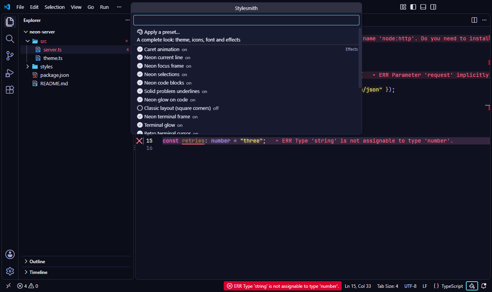

Strict CSP Hashing
VS Code's Content-Security-Policy stays perfectly intact. Stylesmith calculates the exact SHA-256 hash for every custom script you inject, preventing unauthorized code execution.
The safe styling engine for VS Code. Inject custom CSS and JS while keeping the editor's strict native security policy fully intact. Built to survive updates effortlessly, it patches your UI cleanly and perfectly reversibly.
Install from Marketplace View GitHub Source
Stop writing CSS from scratch. Stylesmith comes fully loaded with cyberpunk and retro presets. Apply a whole new aesthetic in one click, complete with CRT scanlines, neon typography, and typing sparks.
Explore All Themes Explore Dynamic Effects

Modifying the editor UI typically breaks VS Code's internal security. Stylesmith was engineered to keep you safe:
VS Code's Content-Security-Policy stays perfectly intact. Stylesmith calculates the exact SHA-256 hash for every custom script you inject, preventing unauthorized code execution.
Stylesmith verifies the exact Git commit of your VS Code build before re-patching files. This ensures automated updates only happen during genuine VS Code upgrades, keeping the "Corrupt Installation" warning functional as a defense mechanism against malware.
File operations use UUID suffixes and exclusive write locks to neutralize symlink and race-condition attacks. Reverting to the pristine state is mathematically verified before patching.
Get a complete retro setup running in seconds without Administrator privileges.
code --install-extension 21010.stylesmithStylesmith: Enable.